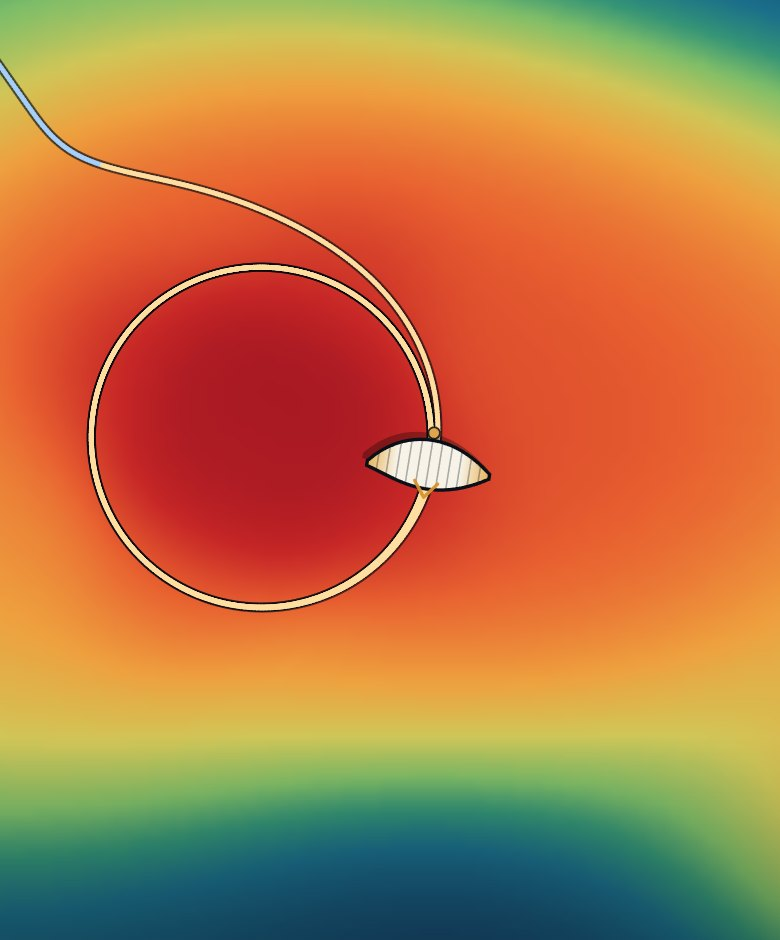

03 / PARAGLIDING LAB
滑翔伞实验室
把飞行数据、空气原理、盘气流训练和旧日记录放在同一张桌子上：用 IGC 复盘真实飞行，用交互模型解释伞为什么能飞，用训练游戏练习找气流。
TRAINING GAME / 盘气流训练
热气流核心搜寻Thermal Core Hunt · M1.5
听高度表的蜂鸣判断升降，靠翼尖抖动找气流边缘，在随机生成的多热气流里盘到云底。支持隐藏气流图、2/4/6 m/s 风与九向风向，每一局的热气流形状和分布都不一样。

DATA / 飞行数据
Flight Lab
导入 IGC，查看彩色三维轨迹、逐圈盘旋与高度/速度剖面，导出 3D 回放视频。
进入飞行实验室 ↗PRINCIPLES / 原理滑翔伞为什么能飞
从冲压翼与气室，到低雷诺数翼型、XFOIL 极曲线，再到可交互的简化 6DOF。
阅读原理与演示 ↗ARCHIVE / 旧闻太原上空，有一群会飞的人
2016 年《太原晚报》的一次采访，山西飞行者滑翔运动俱乐部的旧记录。
阅读旧闻 ↗TOOL / 工具UV-K6 开机画面定制
连接对讲机，上传图片或输入呼号，写入开机画面。浏览器直连，无需安装软件。
打开定制工具 ↗TOOL / 文字开机文字写入（基础版）
未扩容 EEPROM 的机器用：改两行开机文字（英文/数字）。
打开文字工具 ↗GUIDE / 指南UV-K6 刷机指南
把泉盛 UV-K5/K6 刷成 LOSEHU 自定义固件的完整步骤（k5prog-win / K5Web）。
阅读刷机指南 ↗接下来
按飞行日期整理复盘、风漂估计与热气流核心定位，并把当天的照片和视频挂到同一条记录上。影像档案会在这个栏目里慢慢长出来。